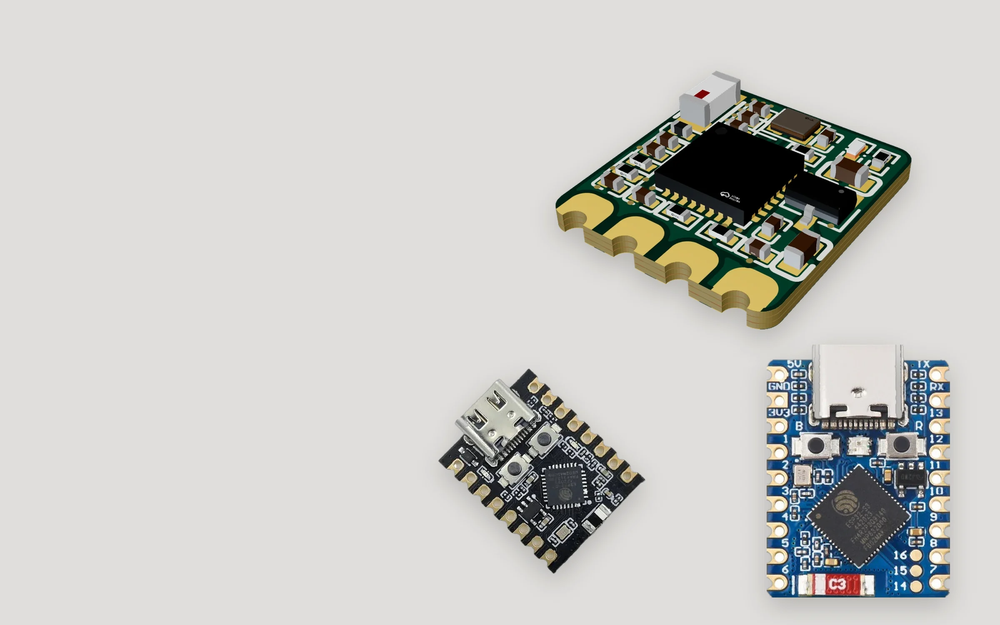
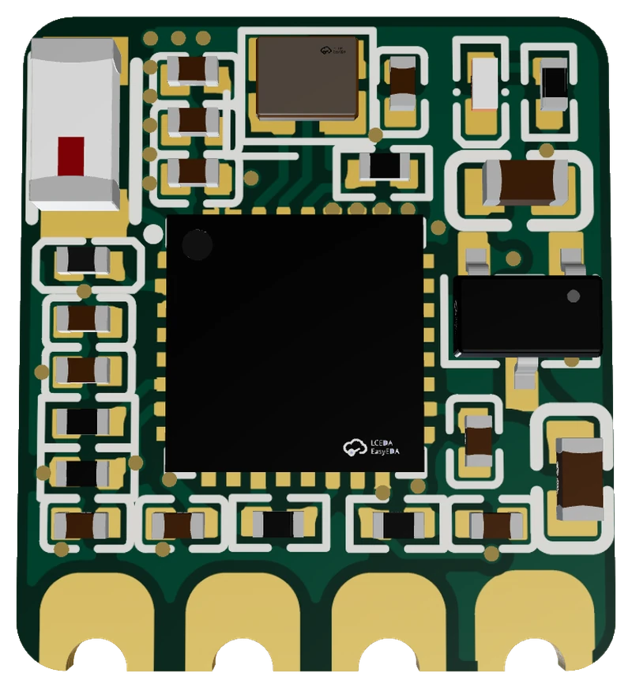

FPV drone projects and tools
Open-source firmware, hardware and guides for FPV pilots. The first project is RecLink, a camera link for Betaflight.
- Projects
- One: RecLink
- Firmware
- 0.2.1, pre-release
- Licence
- GPL-3.0
- Boards
- Three supported
Projects
RecLinkCamera link for Betaflight, GoPro and DJI
ESP32 firmware that starts recording on arm or a radio switch, draws camera status on your OSD and syncs the camera clock. It runs on a 0.68 g board or a common ESP32 dev board.

22
OSD tokens
4
cameras paired at once
6
radio-switch zones, at most
300
ms to restart after a fault